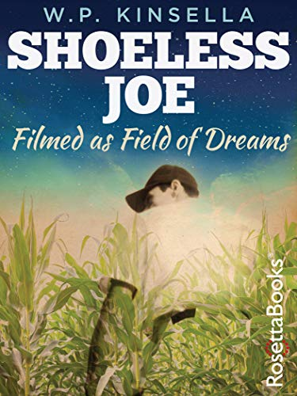
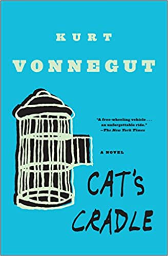
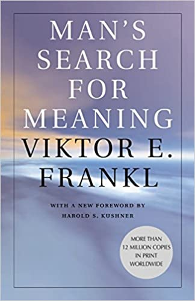
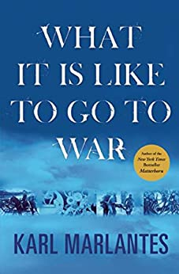
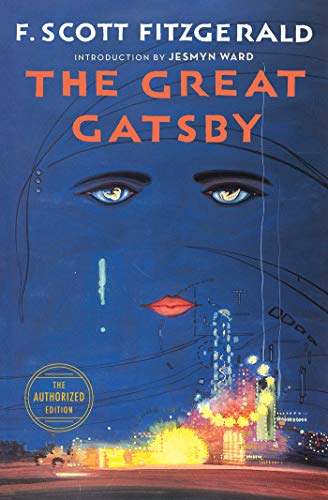
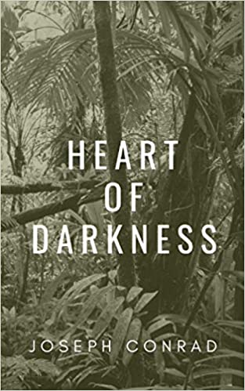

Shoeless Joe by W. P. Kinsella
This is the lyrical novel from 1982 about baseball, love, fathers and sons,
writing, self-discovery, and (of course) Shoeless Joe Jackson. You know it from
Kevin Costner’s Field of Dreams (1989), which moved me when
I first saw it (in my mid-20s), but the book is so much richer, deeper,
and more magical.
Cat's Cradle by Kurt Vonnegut
Cat's Cradle offers the best of Vonnegut's well-known satire and
absurdity contained in a compelling and forward-moving story. This novel sheds
light on so many aspects of human behavior - our tribalism, our need for purpose,
religion, the lies we tell ourselves and each other, our arrogance and short-sightedness,
and our profound potential to destroy ourselves. Hilarious and devastating.


Man's Search for Meaning by Viktor Frankl
Frankl lost everything in the Nazi concentration camps, including his career, his wife,
his wealth and his possessions. Everything except the ability to choose
his response, which is one of the main themes of this powerful book. A key lesson:
We shouldn't ask "What is the meaning of life?" but instead realize that we are the ones
being asked.
What it is Like to go to War by Karl Marlantes (read by Bronson Pinchot)
Marlantes is a wise and insightful narrator of not only his Vietnam experiences but
also the of his struggles and growth in the lifetime since he came home. Actor
Bronson Pinchot brings the narrative to life with a fantastic performance
(and those who remember him in Beverly Hills Cop will enjoy noting the difference
in his pronunciation of the name "Axel").


The Great Gatsby by F. Scott Fitzgerald (read by Anthony Heald)
Gatsby has so much to say about America, even a century after it was written. It addresses
our class distinctions, old money vs. new, celebrity worship, the protections that riches
offer vs. the limitations for those born poor - and all of this in a story that is often
funny, sometimes tragic, and always perfectly written. Actor Anthony Heald
gets this performance just right (as he does in all the books he reads).
Heart of Darkness by Joseph Conrad (read by Kenneth Branagh)
I tried and failed in college to get through this short novel on British colonialism in
Africa. But I got interested again after falling for Apocalypse Now
(which is loosely based on Heart of Darkness), and this wonderful rendition by
British actor and director Kenneth Branagh pulls you into and through this study of
power, ambition, greed, madness, and what makes us (and keeps us) human.
